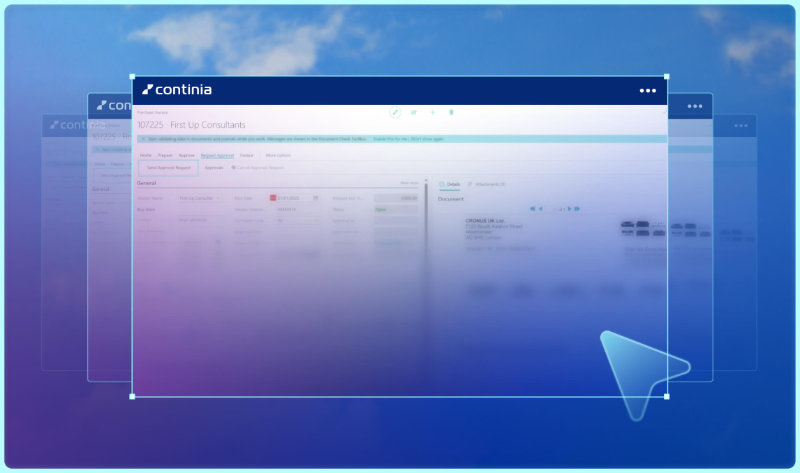
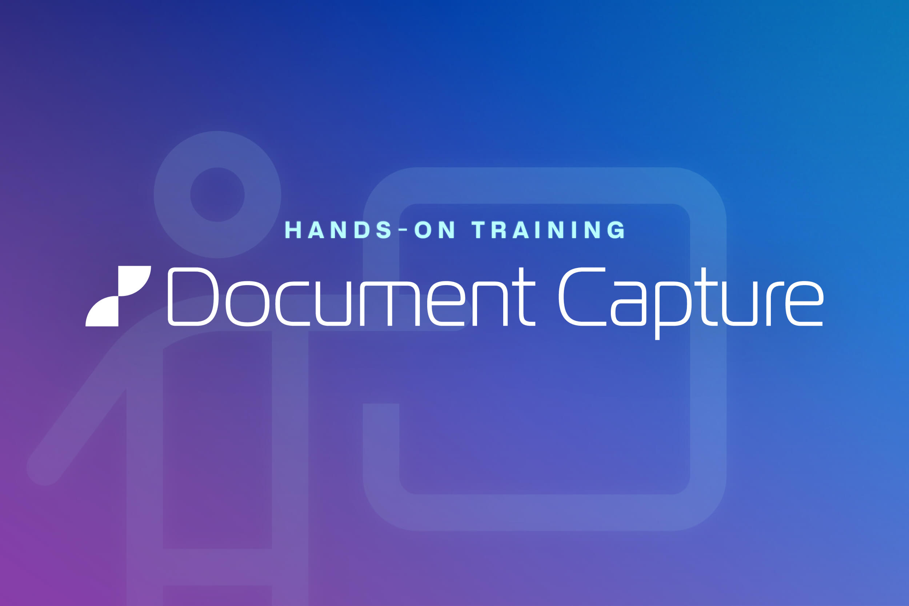

Automate your Accounts Payable, end to end.
Capture, code, match and post supplier invoices automatically — with AI-powered recognition, three-way matching and approvals, 100% built inside Microsoft Dynamics 365 Business Central.
Everything your AP team needs, in one place
From the moment an invoice arrives to the moment it's posted — Document Capture handles the whole journey.
Data Capture
Intelligent OCR reads every invoice and drops the recognized values straight into the right Business Central fields — no manual typing, far fewer errors.
Purchase Contracts
Keep every vendor agreement in one place, so you never pay for a subscription you no longer use and always have full visibility of recurring spend.
Order Matching
Automatic three-way matching checks each invoice against its purchase order and receipt, with variance tolerances you control.
Secure Archive
Encrypted document storage with a full audit trail — retrieve any invoice in seconds and stay ready for every compliance check.
Approval Workflow
Route invoices for approval automatically, with email notifications and a mobile Web Approval Portal so decisions never wait for the office.
Continia eDocuments
Receive and process electronic documents over Peppol, NemHandel and KSeF — compliant with regional e-invoicing rules out of the box.
All 87 features, module by module
Jump straight into the module you care about, or browse the complete Document Capture feature list.
Try Document Capture step by step
Get a hands-on look at how Document Capture streamlines invoice processing directly in Microsoft Dynamics 365 Business Central.
You'll see how documents move through import, registration, approval, posting and archiving in one connected workflow — a clearer view of how the solution supports accounts payable from start to finish.
Free to try, no sign-up, at your own pace.

Five steps. Zero manual entry.
Every invoice follows the same automated path — you only step in when something needs a human decision.
1 · Capture
Invoices arrive by email, PDF, scan or e-document — all collected in one inbox.
2 · Recognize
AI-powered OCR reads the header and lines and maps them to Business Central.
3 · Match
Three-way matching verifies each line against orders and receipts.
4 · Approve
Routed to the right approvers on web or mobile, with a full audit trail.
5 · Post
Approved invoices post automatically — archived and ready to pay.
Set your team up for success
Add value to your workday with Document Capture and set your team up for success. Our data capture solution helps you optimize your business processes efficiently — saving you plenty of time, and making sure you can get home on time.
Less manual work. Fewer errors. Faster approvals. And rock-solid fraud prevention on every invoice that comes through the door.

Check out a Document Capture demo
Pick any chapter in the playlist below to jump straight to that part of the workflow.
All {{ ytTotal }} chapters
Hands-on Document Capture training
PartnerZone is the Continia partner portal — the same place your team already goes for price lists, licence terms and product documentation. Document Capture training material lives there too.
Sign in with your partner account to get started. Not a partner yet? Any of our 1,500+ partners can take you through Document Capture instead.
